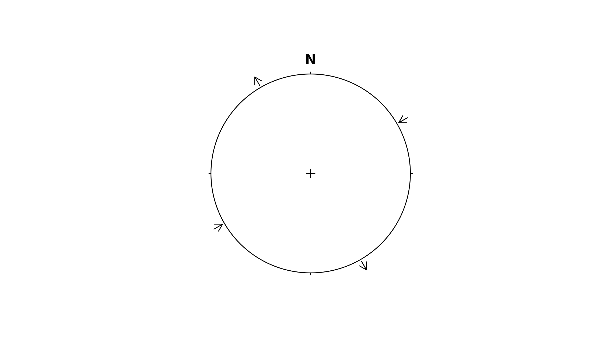

Horizontal directions
Usage
stereo_shmax(
azi,
...,
type = c("arrows", "line"),
shmin = FALSE,
radius = NULL,
arrow.offset = 0.02,
arrow.length = 0.1,
arrow.head = arrow.length
)Arguments
- azi
numeric. Angle of maximum horizontal stress in degrees
- ...
... arguments passed to
graphics::segments()orgraphics::arrows()- type
character. Either
'line'or'arrows'for a straight line or arrows at the perimeter of the plot.- shmin
logical. Whether the minimum horizontal stress should be indicated too?
- radius
numeric. Radius of circle. Defaults to
getOption("structr.radius").- arrow.offset
numeric. Offset of the arrows from the perimeter.
- arrow.length
numeric. Length of the arrows.
- arrow.head
numeric. Length of the arrow head.
Examples
stereoplot()
stereo_shmax(30, shmin = TRUE)
